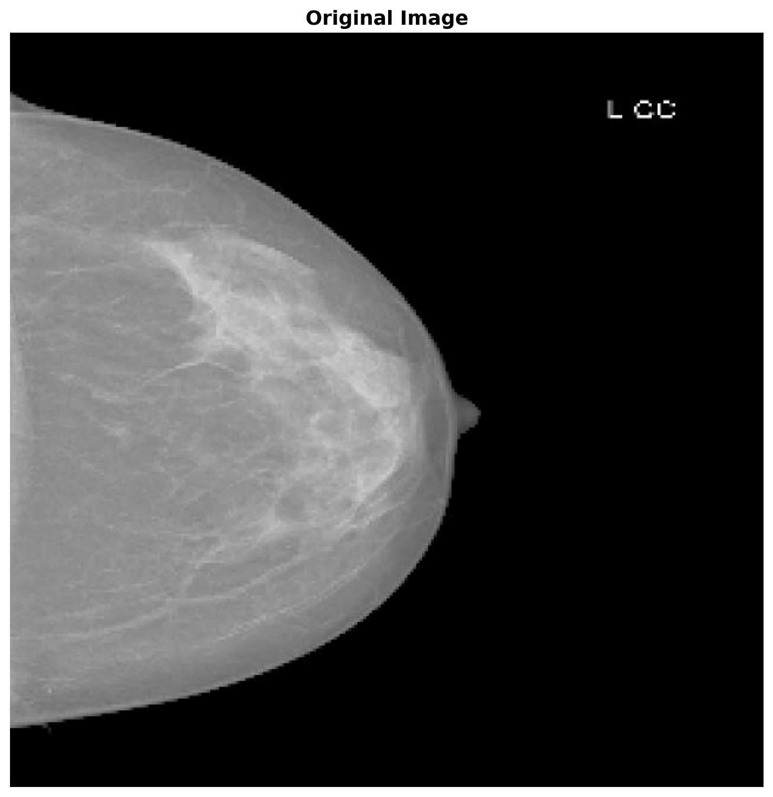
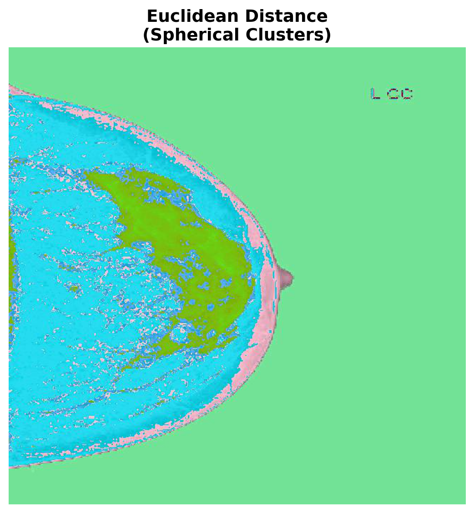
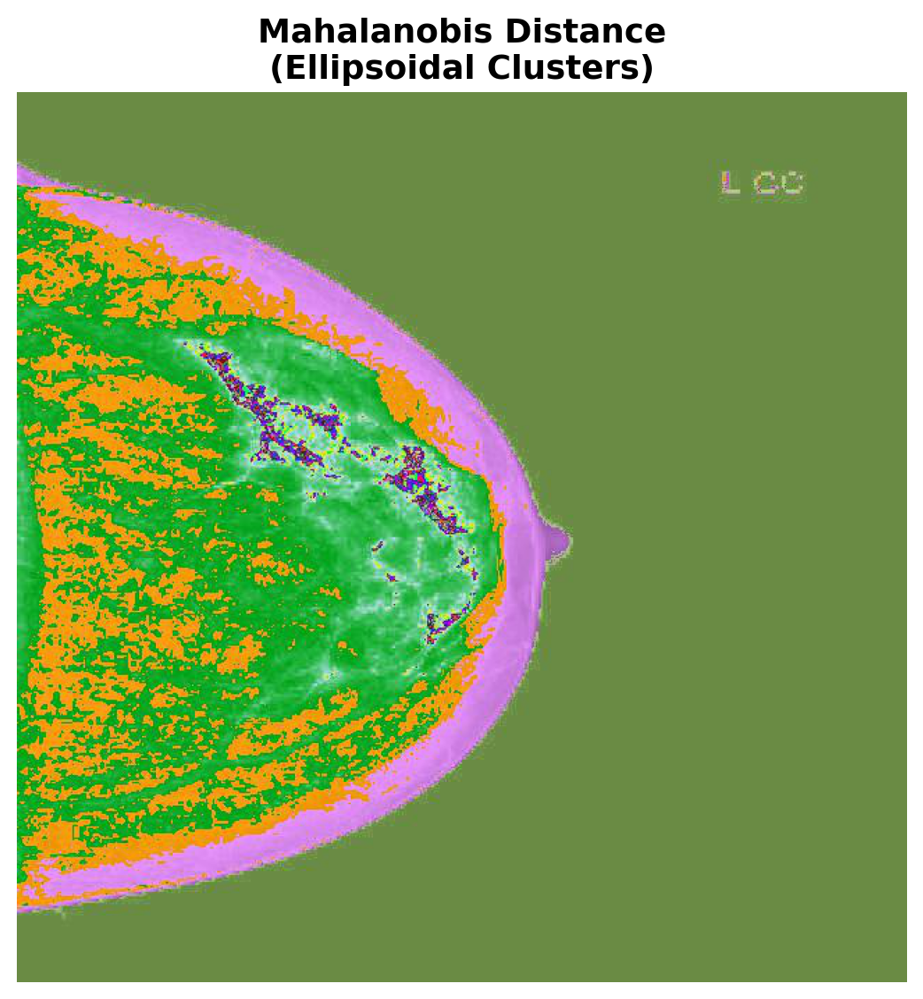

# Import necessary libraries
import numpy as np
import matplotlib.pyplot as plt
from PIL import Image
import os
import sys
import matplotlib as mpl
mpl.rcParams['figure.figsize'] = (8, 5)
mpl.rcParams['font.size'] = 13
# Add parent directory to path to import FuzzyPySeg
sys.path.insert(0, os.path.abspath('..'))
from FuzzyPySeg import FCM
# Set up matplotlib for better plots
plt.rcParams['figure.figsize'] = (12, 8)
plt.rcParams['font.size'] = 10Fuzzy Medical Image Segmentation
This notebook demonstrates the FuzzyPySeg package for image segmentation using Fuzzy C-Means (FCM) clustering with various centroid initialization algorithms and distance functions.
Image segmentation is performed by grouping pixels into clusters based on their color similarity. Unlike hard clustering methods, FCM allows pixels to have partial membership in multiple clusters, making it more flexible for handling ambiguous boundaries.
The work discussed here is published in Entropy (DOI: 10.3390/e25071021). You can read the paper here.
Model
Fuzzy C-Means (FCM) is an unsupervised clustering algorithm that partitions data into \(c\) clusters by minimizing the following objective function:
\[J_m = \sum_{i=1}^{n} \sum_{j=1}^{c} u_{ij}^m \|x_i - v_j\|^2\]
where in our setting:
- \(n\) is the number of pixels in the image
- \(c\) is the number of clusters
- \(u_{ij}\) is the membership degree of pixel \(i\) to cluster \(j\) (satisfying \(\sum_{j=1}^{c} u_{ij} = 1\))
- \(m\) is the fuzziness parameter (\(m > 1\)), controlling the degree of fuzziness
- \(x_i\) is the feature vector (RGB values) of pixel \(i\)
- \(v_j\) is the centroid (prototype) of cluster \(j\)
- \(\|\cdot\|\) is the distance metric (Euclidean or Mahalanobis)
The algorithm steps are as follows:
Initialize centroids: Randomly select \(c\) pixels as initial cluster centroids, or use optimization algorithms (GA, Firefly, BBO).
Update membership matrix: For each pixel \(i\) and cluster \(j\): \[u_{ij} = \frac{1}{\sum_{k=1}^{c} \left(\frac{\|x_i - v_j\|}{\|x_i - v_k\|}\right)^{\frac{2}{m-1}}}.\]
Update centroids: For each cluster \(j\): \[v_j = \frac{\sum_{i=1}^{n} u_{ij}^m x_i}{\sum_{i=1}^{n} u_{ij}^m}.\]
Repeat steps 2-3 until convergence (when the change in centroids is below a threshold \(\epsilon\)).
In this package we include 2 distance metrics:
Euclidean Distance: \[\|x_i - v_j\| = \sqrt{\sum_{k=1}^{3} (x_{ik} - v_{jk})^2}.\]
Mahalanobis Distance: \[\|x_i - v_j\|_M = \sqrt{(x_i - v_j)^T \Sigma_j^{-1} (x_i - v_j)},\]
where \(\Sigma_j\) is the covariance matrix for cluster \(j\). In our paper we show that the Mahlanobis distance performs better than the Euclidean distance for mammography data.
Example Analysis
Let’s load the example image that we want to segment.
# Load the example image
image_path = 'example.jpg'
# Check if image exists
if not os.path.exists(image_path):
raise FileNotFoundError(f"Please place an example image named 'example.jpg' in the example folder")
# Load and display the original image
original_image = Image.open(image_path)
original_array = np.array(original_image)
# Display the original image
plt.figure(figsize=(10, 8))
plt.imshow(original_array)
plt.title('Original Image', fontsize=14, fontweight='bold')
plt.axis('off')
plt.tight_layout()
plt.show()
In what follows we run FCM with both distance metrics to compare their performance.
import random
import logging
# Suppress INFO level logging from FCM
logging.basicConfig(level=logging.WARNING)
np.random.seed(42)
random.seed(42)
output_dir_euclidean = 'output_euclidean'
output_dir_mahalanobis = 'output_mahalanobis'
os.makedirs(output_dir_euclidean, exist_ok=True)
os.makedirs(output_dir_mahalanobis, exist_ok=True)
num_clusters = 3
fuzziness = 2
max_iterations = 50
centroid_init = "GA"
error_threshold = 0.001
fuzzy_clustering = "False"
FCM(
image_path=image_path,
save_to_path=output_dir_euclidean,
numClust=num_clusters,
m=fuzziness,
maxIter=max_iterations,
clusterMethod="Euclidean",
centroid_init=centroid_init,
error=error_threshold,
hard=fuzzy_clustering
)
FCM(
image_path=image_path,
save_to_path=output_dir_mahalanobis,
numClust=num_clusters,
m=fuzziness,
maxIter=max_iterations,
clusterMethod="Mahalanobis",
centroid_init=centroid_init,
error=error_threshold,
hard=fuzzy_clustering
)def plot_single_clustering(output_dir, num_clusters, method_name, method_description, filename_suffix=""):
"""
Load and display a single clustering result.
Parameters:
-----------
output_dir : str
Path to directory containing the clustering results
num_clusters : int
Number of clusters used in the segmentation
method_name : str
Name of the method (e.g., "Euclidean Distance")
method_description : str
Description of the method (e.g., "Spherical Clusters")
filename_suffix : str
Optional suffix for the filename (e.g., "_M" for Mahalanobis)
"""
# Load the overlayed color image
overlay_path = os.path.join(output_dir, f'group{num_clusters}_FCM{filename_suffix}.jpeg')
# Load result
if os.path.exists(overlay_path):
overlay_image = Image.open(overlay_path)
overlay_array = np.array(overlay_image)
loaded = True
else:
print(f"Warning: {overlay_path} not found")
loaded = False
# Display result
fig, ax = plt.subplots(1, 1, figsize=(6, 6))
if loaded:
ax.imshow(overlay_array)
ax.set_title(f'{method_name}\n({method_description})', fontsize=14, fontweight='bold')
else:
ax.text(0.5, 0.5, f'{method_name} result\nnot found',
ha='center', va='center', fontsize=12)
ax.axis('off')
plt.tight_layout()
plt.show()After running the algorithm we can create plots where each pixel is colored based on its membership degree to each cluster. In fuzzy clustering, pixels can have partial membership in multiple clusters, creating smooth transitions and blended colors at boundaries.
Typically, the big difference between using Euclidean distance versus Mahalanobis distance is that the former prefers spherical equidistant clusters while the latter can accommodate ellipsoidal shapes. This is because the Mahalanobis distance takes into account the covariance of the data. In fact, it can be shown that C-means algorithms that use the Euclidean distance are actually equivalent to Gaussian Mixture Models where the covariance matrix is constrained to be the identity. Using the Mahalanobis distance effectively relaxes this constraint.
Let’s compare the results of each distance metric side-by-side:
# Display Euclidean clustering result
plot_single_clustering(output_dir_euclidean, num_clusters,
"Euclidean Distance", "Spherical Clusters")
# Display Mahalanobis clustering result
plot_single_clustering(output_dir_mahalanobis, num_clusters,
"Mahalanobis Distance", "Ellipsoidal Clusters",
filename_suffix="_M")
In this example we ran FCM with 3 clusters. Thus each cluster membership degree is used as the red, green, and blue channel values respectively. This results in a plot where colors between the RGB values reflect the level uncertainty, e.g., green pixels are very likely to be group 3 while purple pixels are between groups 1 and 2.
Why Does This Work?
For those that are curious about how this works and are interested in the math, the proof for membership and centroid updates follows easily from ideas seen in a Calculus 3 course. The basic idea is to minimize the objective function using the method of Lagrange multipliers so we can observe the constraint that memberships sum to one.
Let the FCM objective function be
\[ J = \sum_{i=1}^c \sum_{j=1}^n u_{ij}^m \| x_j - c_i \|^2 \]
with constraints: - \(\sum_{i=1}^c u_{ij} = 1\) for each data point \(j\), - \(0 \leq u_{ij} \leq 1\).
Forming the Lagrangian yields
\[ \mathcal{L} = \sum_{i=1}^c \sum_{j=1}^n u_{ij}^m \| x_j - c_i \|^2 - \sum_{j=1}^n \lambda_j \left(\sum_{i=1}^c u_{ij} - 1\right) \]
where we have introduced a Lagrange multiplier \(\lambda_j\) for each data point. Computing the partial derivative with respect to \(u_{ij}\) gives:
\[ \frac{\partial \mathcal{L}}{\partial u_{ij}} = m u_{ij}^{m-1} \| x_j - c_i \|^2 - \lambda_j = 0, \]
thus,
\[ u_{ij}^{m-1} = \frac{\lambda_j}{m \| x_j - c_i \|^2} \]
and because \(\sum_{i=1}^c u_{ij} = 1\). This means that
\[ u_{ij} = \frac{ \| x_j - c_i \|^{-2/(m-1)} } { \sum_{k=1}^c \| x_j - c_k \|^{-2/(m-1)} }. \]
We do a similar thing for the cluster center \(c_i\):
\[ \frac{\partial J}{\partial c_i} = \sum_{j=1}^n u_{ij}^m 2 (c_i - x_j) = 0. \]
Solving for \(c_i\):
\[ c_i = \frac{ \sum_{j=1}^n u_{ij}^m x_j }{ \sum_{j=1}^n u_{ij}^m }. \]
We can do the same thing with the Mahlanobis distance we just need to slightly modify the objective function and proofs. Let the FCM objective function using the Mahalanobis distance be
\[ J = \sum_{i=1}^c \sum_{j=1}^n u_{ij}^m (x_j - c_i)^T \Sigma_i^{-1} (x_j - c_i) \]
with constraints: - \(\sum_{i=1}^c u_{ij} = 1\) for each data point \(j\), - \(0 \leq u_{ij} \leq 1\).
Forming the Lagrangian yields
\[ \mathcal{L} = \sum_{i=1}^c \sum_{j=1}^n u_{ij}^m (x_j - c_i)^T \Sigma_i^{-1} (x_j - c_i) - \sum_{j=1}^n \lambda_j \left(\sum_{i=1}^c u_{ij} - 1\right) \]
where we have introduced a Lagrange multiplier \(\lambda_j\) for each data point. Computing the partial derivative with respect to \(u_{ij}\) gives:
\[ \frac{\partial \mathcal{L}}{\partial u_{ij}} = m u_{ij}^{m-1} (x_j - c_i)^T \Sigma_i^{-1} (x_j - c_i) - \lambda_j = 0. \]
Thus
\[ u_{ij}^{m-1} = \frac{\lambda_j}{m (x_j - c_i)^T \Sigma_i^{-1} (x_j - c_i)} \]
and because \(\sum_{i=1}^c u_{ij} = 1\), we have
\[ u_{ij} = \frac{ [(x_j - c_i)^T \Sigma_i^{-1} (x_j - c_i)]^{-1/(m-1)} } { \sum_{k=1}^c [(x_j - c_k)^T \Sigma_k^{-1} (x_j - c_k)]^{-1/(m-1)} }. \]
Considering the cluster center \(c_i\) next:
\[ \frac{\partial J}{\partial c_i} = \sum_{j=1}^n u_{ij}^m 2 \Sigma_i^{-1} (c_i - x_j) = 0. \]
Solving for \(c_i\) yields
\[ c_i = \frac{ \sum_{j=1}^n u_{ij}^m x_j }{ \sum_{j=1}^n u_{ij}^m }. \]
Finally, we update the covariance matrix by differentiating the objective with respect to \(\Sigma_i^{-1}\):
\[ \frac{\partial J}{\partial \Sigma_i^{-1}} = \sum_{j=1}^n u_{ij}^m (x_j - c_i)(x_j - c_i)^T. \]
Setting the derivative to zero and solving for \(\Sigma_i\) gives
\[ \Sigma_i = \frac{ \sum_{j=1}^n u_{ij}^m (x_j - c_i)(x_j - c_i)^T } { \sum_{j=1}^n u_{ij}^m }. \]
With this we have proved the updates. If you would like to better understand why alternating these updates allows us to converge to a local minima, I recommend you read about the EM algorithm or any standard optimization text.